Lecture 5
Function and Recursion

FUNCTION
A function is a block of code which only runs when it is called. You can pass data, known as parameters, into a function. A function can return data as a result.

Function name should be in lowercase and if it is more than one word then use underscore to separate them.should be not start with number or special character.can't contain space.
Parameter is the value passed to the function. We can pass any number of parameters. Function body uses the parameter’s value to perform an action
Function body is the block of code that performs the action. It is indented from the function header. The function body can contain any number of statements.
Example
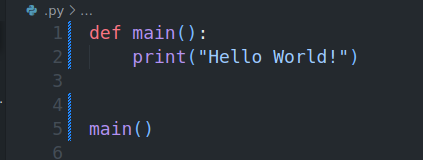

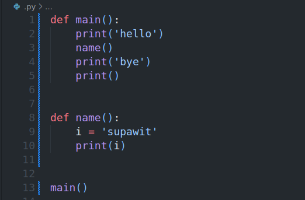
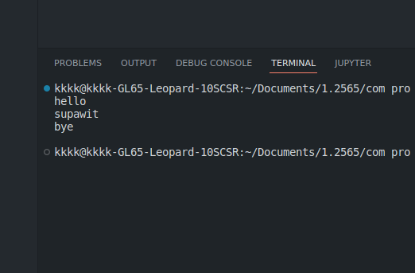
BENEFITS OF MODULARISING A PROGRAM WITH FUNCTIONS
- Reduces the need for duplicate code. This makes programs shorter, easier to read, and easier to update.
- Divides a large program into smaller sub-programs, making it easier to debug and test.
- Allows programmers to solve larger problems by combining their knowledge of several smaller problems.
-
GLOBAL,GLOBAL CONSTANTS
Global variables are variables that are defined outside of a function. They can be accessed inside or outside of functions.-
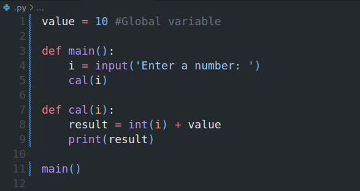
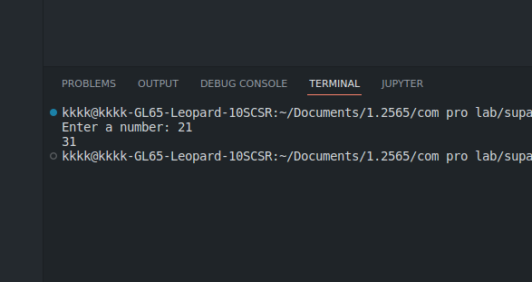
-
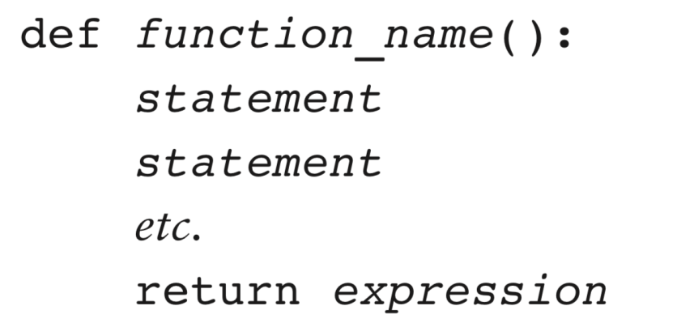
-
Value-returning functions are functions that return a value to the calling statement. The return statement is used to return a value from a function. -
STORING FUNCTIONS IN MODULES -
Recursive functions are functions that call themselves. A recursive function must have a base case, which is a condition that causes the function to stop calling itself. -
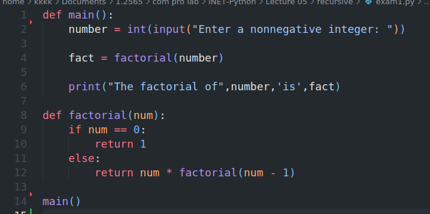
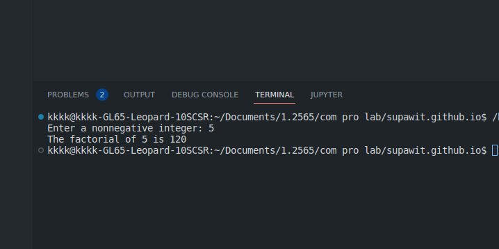
-
min()
min function returns the smallest value in a list.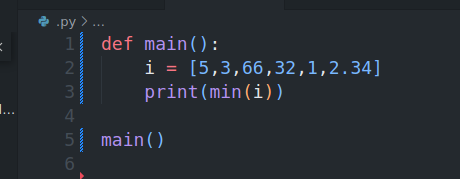
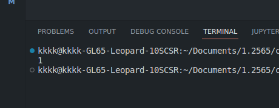
-
sorted
sorted function returns a sorted list.
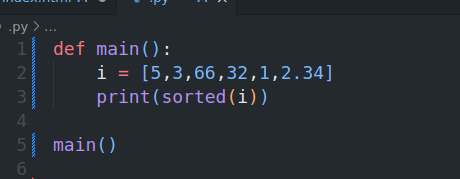
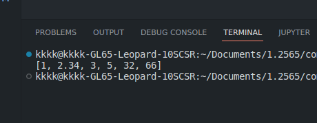
-
sum()
sum function returns the sum of the values in a list.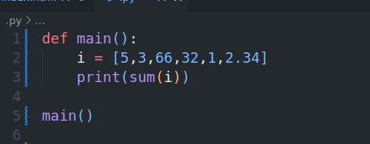
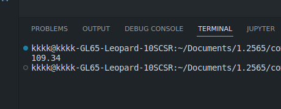

ARGUMENTS TO A FUNCTION
LOCAL VARIABLES?
Variables that are created inside a function belong to the local scope of that function, and can only be used inside that function.Different functions can have local variables with the same name, because local variables are only visible inside their own function.
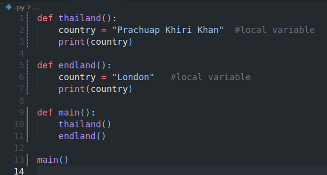
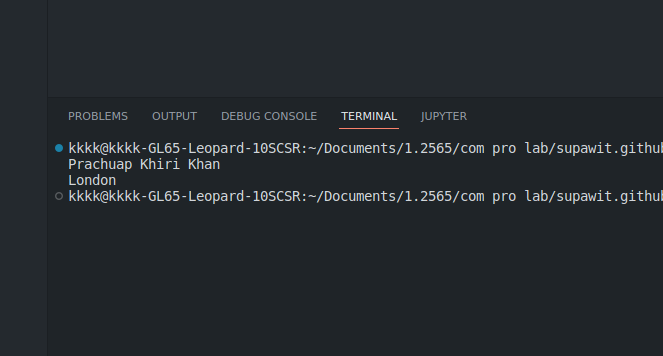
PASSING ARGUMENTS
An argument is any piece of data that is passed into a function when the function is called. A parameter is a variable that receives an argument that is passed into a function.
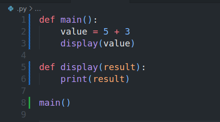
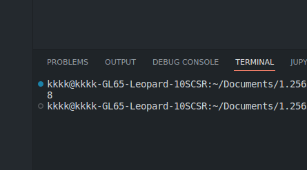
Example 2
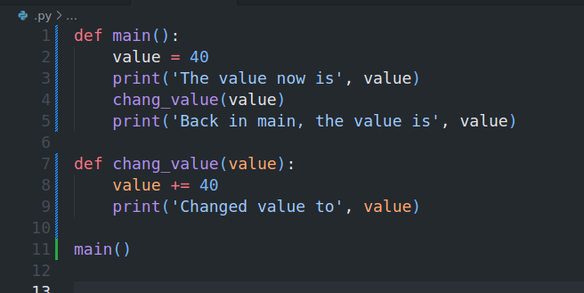
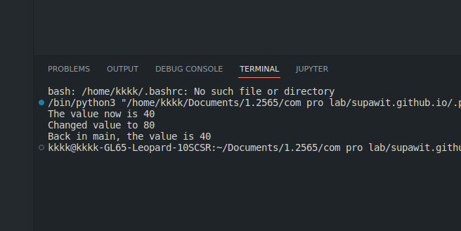
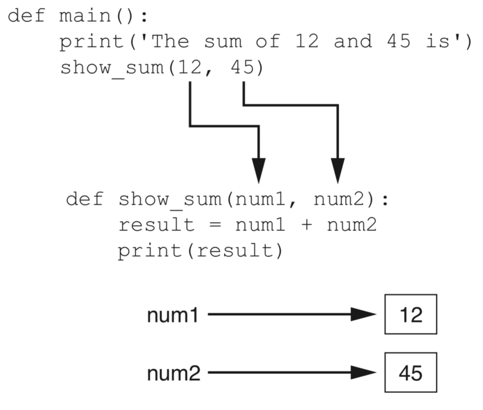
PROGRAM SIMULATES 10 TOSSES OF A COIN
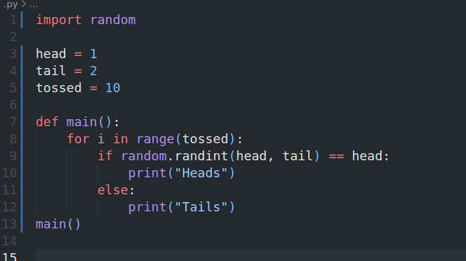
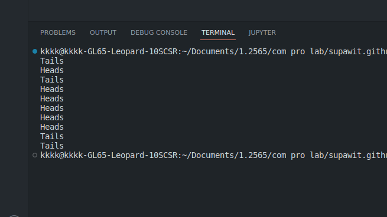
VALUE-RETURNING FUNCTIONS
Example
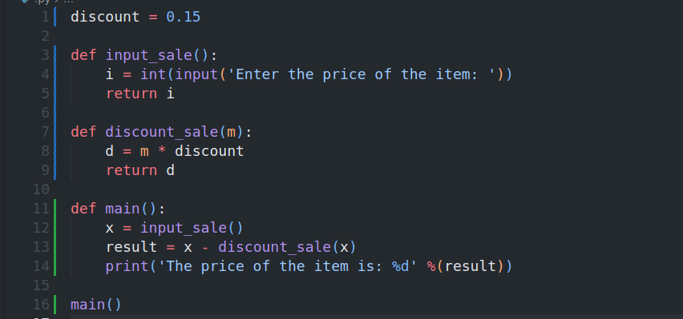
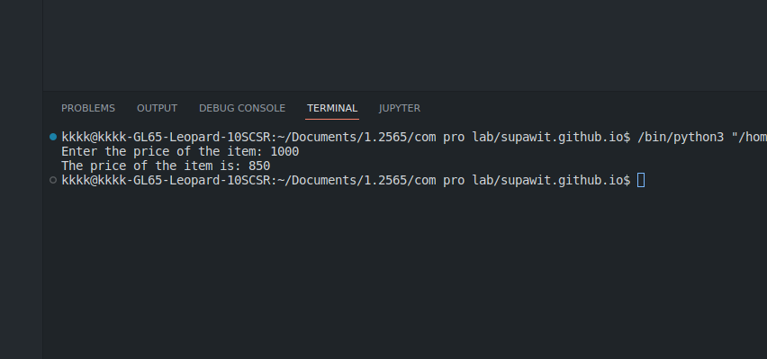
Modules are files that contain functions. They are used to organize functions into logical groups. A module can be imported into a program using the import statement.
Example
create file for module
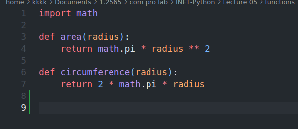
create file for module
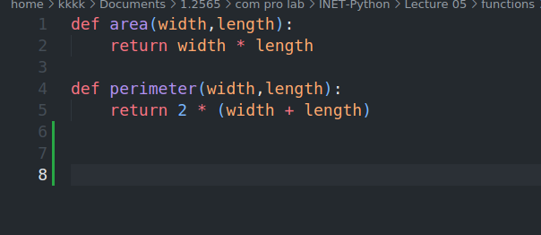
module
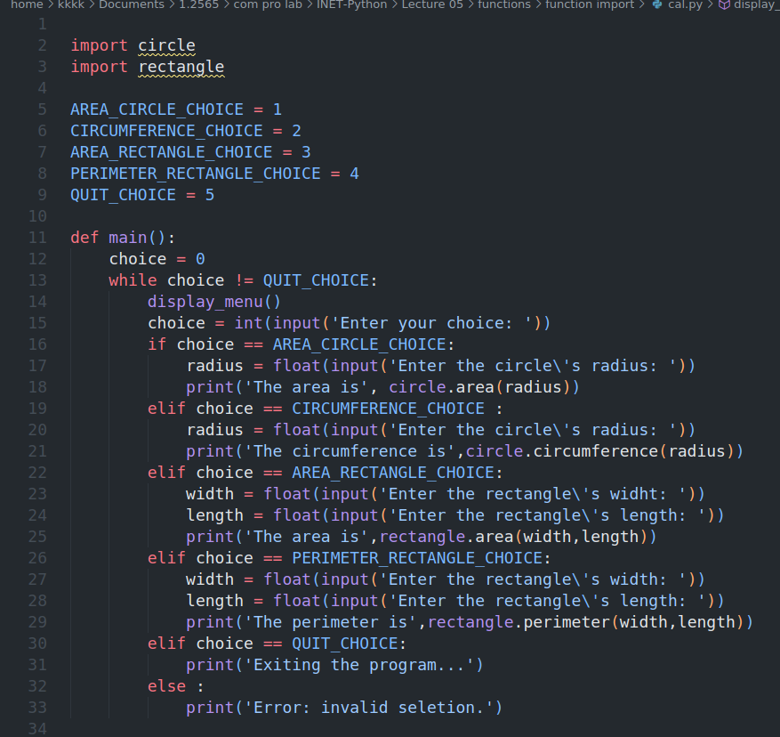
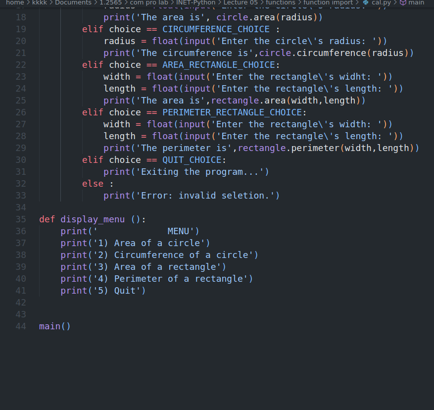
RECURSIVE
COMMON FUNCTIONS
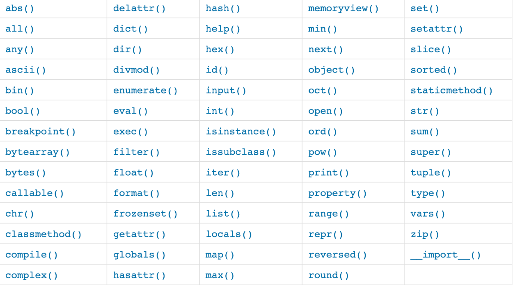
FINISH!

Lecture 6
Files and Exceptions

-
WRITE DATA TO FILE
-
READ DATA FROM FILE


TYPE OF FILE
1. Text file contains encoded as text.
2. Binary file has not been converted to text. Two ways to access data in a file: 1. Sequential access: read one item at a time, in order. 2. Direct access: jump to any item in the file.-

OPEN FILE
To open a file, we use the open function. The open function returns a file object.
file_variable = open(filename , mode)
file mode is optional. If not specified, the default is read-only.
'r' - read mode
'w' - write mode
'a' - append mode ,If the file does not exist, it is created.

PYTHON FILE WRITE


PYTHON FILE READ


FILE READLINE
The readline method reads a single line from the file. Each time the method is called, it reads the next line in the file.


WRITE NUMBERS


READ NUMBERS


-
USING LOOPS TO WRITE FILE
We can use a loop to read the lines in a file. The loop continues until the end of the file is reached.(empty string is returned.)


USING LOOP TO READ FILE
-
Use For
-
Use While


PROCESSING RECORD
When working with records,Important to be able this.
- Add records

- Display records

- Search specific record


- Modify record

- Delete record

REMOVE,RENAME

-
EXCEPTIONS
An exception is an error that occurs during the execution of a program. When an exception occurs, the program stops and displays an error message.

Example1


If statement in try suite is true, the except suite is skipped.


Example2

-
ELSE CLAUSE
The else clause is executed if the try clause does not raise an exception. if the try clause raises an exception, the else clause is skipped.
Example


-
FINALLY CLAUSE
The finally clause is always executed before leaving the try statement, whether an exception has occurred or not. When an exception has occurred in the try clause and has not been handled by an except clause (or it has occurred in an except or else clause), it is re-raised after the finally clause has been executed. The finally clause is also executed “on the way out” when any other clause of the try statement is left via a break, continue or return statement.
Example


If exception is not handled
If an exception occurs and is not handled by an except clause, it is passed on to the next enclosing try statement. If no handler is found, the exception is an unhandled exception and execution stops with a message as shown below.
THANK !

Lecture 7
List

Sequence type.
-
List
-
Tuple
-
List is a collection which is ordered and changeable. Allows duplicate members.list is mutable.
-
Tuple is a collection which is ordered and unchangeable. Allows duplicate members.tuple is immutable.


LIST
A list is an object that contains multiple data items. Lists are mutable, which means that their contents can be changed.Lists are dynamic data structures.item can be added or removed from the list.use square brackets to create a list or use the list() function.
Example


LIST WITH OPERATIONS
Repeatition operators can use copy the list.list * n(n is integer) or list * list can use to concatenate the list.
You can iterate through the list using for loop.
Example


So,you can use function max() to find the maximum value in the list.
or fucntion min() to find the minimum value in the list.
Example


Example Program


-
LIST METHODS BUILT-IN FUNCTIONS
- IndexError exception is raised if the index is out of range.
- The index of last elements for loop we can use len()-1 function.


-
Use the operator in to check whether an item is in the list.return True or False.
-
Use the operator not in to check whether an item is not in the list.return True or False.


-
Use the function append() to add an item to the end of the list.
-
Use the function index() determine where an item is located in a list.
-
Use the function insert() to add an item at a specific location in the list.
-
Use the function sort() to sort the items in the list.
-
Use the function remove() to remove an item from the list.
-
Use the function reverse() to reverse the order of the items in the list.


LET BUILD PROGRAM HERO!
1.Display Heroes

2.Add Heroes

3.Insert Heroes

4.Remove Heroes


5.Display Sorted Heroes


6.Clear list
7.Add many name


Main Menu


TUPLES
-
- A tuple is a collection which is ordered and unchangeable.
- In Python tuples are written with round brackets.
- Tuples are used to store multiple items in a single variable.
- Tuples are immutable, which means that we cannot change the elements of a tuple once it is assigned.
- Tuples are faster than lists.
- If you have data that doesn't change, implementing it as tuple will guarantee that it remains write-protected.
-

Tuples do not support the method:
append(), insert()
remove(), pop()
sort(), reverse()
clear()
create empty tuple shoud write a comma behind value like this
my_tuple = (1,)-
MATHPLOT
Install Mathplot library
run this command in terminalpip install matplotlib
Example


Bar

Bar function has a color


Last, Pie


Goodluck!!
Lecture 8
Dictionnaires and set

- DICTIONARY
object that is used to store data values in key:value pairs.
key must be unique and of immutable data type such as strings, numbers, or tuples.
values can be any data type and are not necessarily unique.
Dictionary is mutable, meaning that we can change, add or remove items after it has been created.
Dictionary is an unordered collection of items. While other compound data types have only value as an element, a dictionary has a key: value pair.
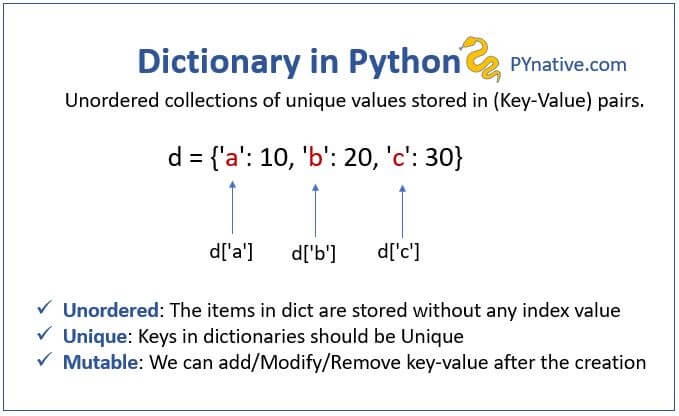
Example
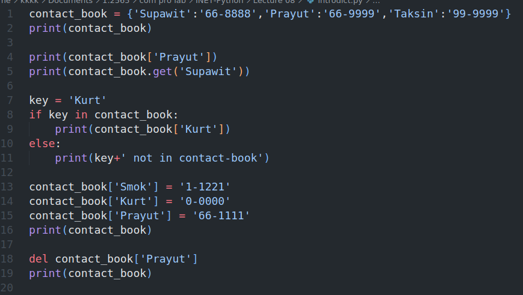
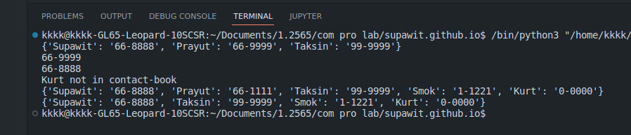
len() function use count number of item in dictionary
To create empty dictionary, we can use dict() or {} function.
like dict = dict() dict = {}Use for loop to iterate over a dictionary.
Example
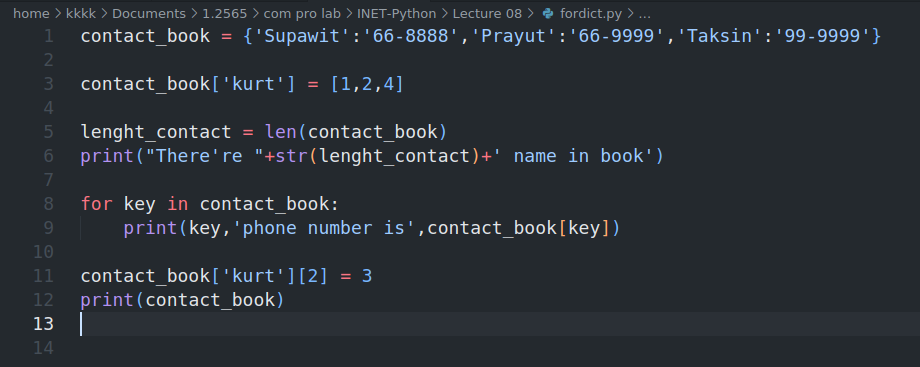
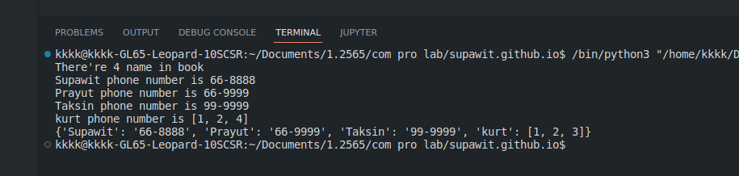
SOME DICTIONARY METHOD
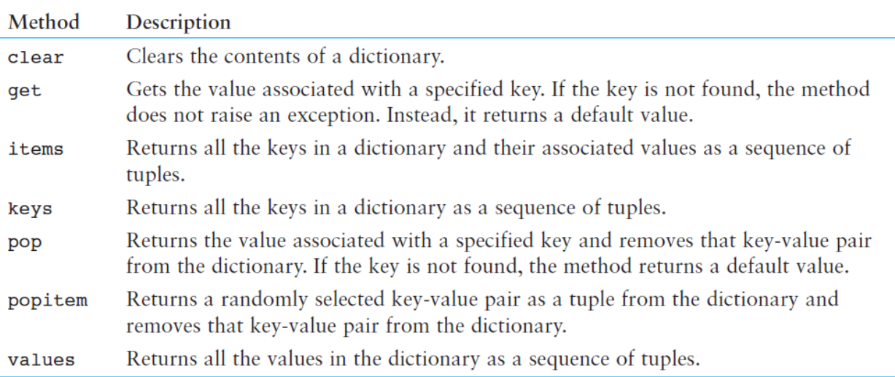
Example
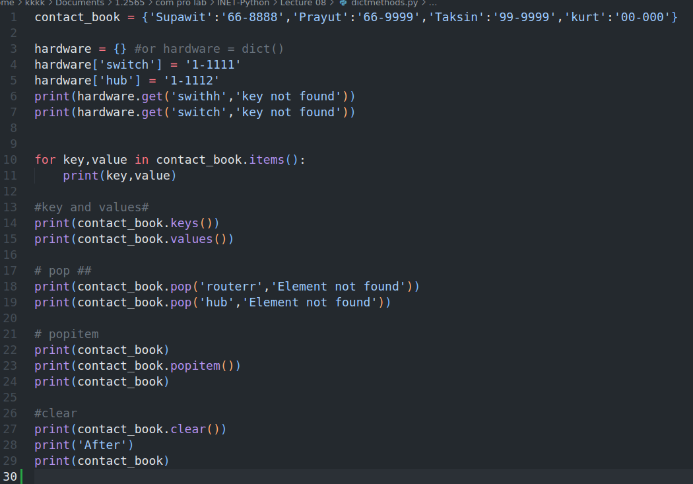
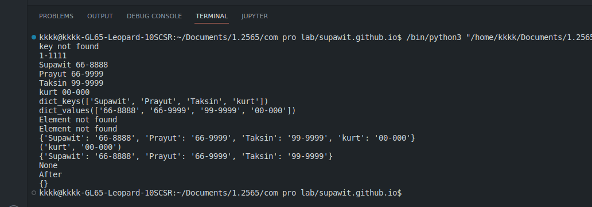
ADD ITEMS TO THE DICTIONARY
We can add new items to the dictionary using the following two ways.
Using key-value assignment: Using a simple assignment statement where value can be assigned directly to the new key.Using
update() Method: In this method, the item passed inside the update() method will be inserted into the dictionary. The item can be another dictionary or any iterable like a tuple of key-value pairs.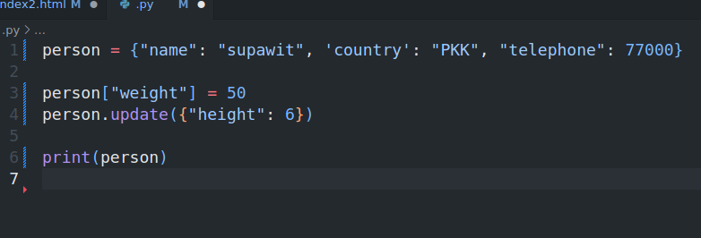

SET DEFAULT VALUE TO A KEY
Using the setdefault() method default value can be assigned to a key in the dictionary. In case the key doesn’t exist already, then the key will be inserted into the dictionary, and the value becomes the default value, and None will be inserted if a value is not mentioned.
In case the key exists, then it will return the value of a key.
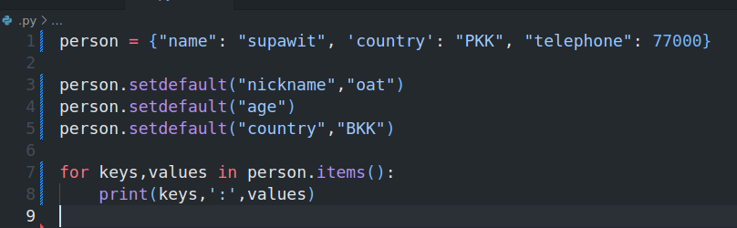
As seen in the above example the value of the setdefault() method has no effect on the ‘country’ as the key already exists.-

Try this example
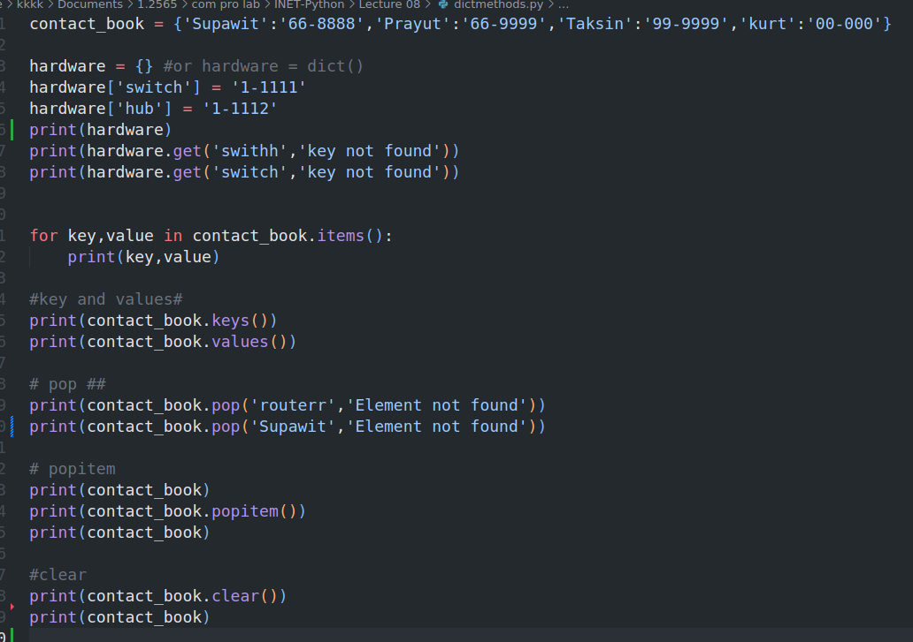
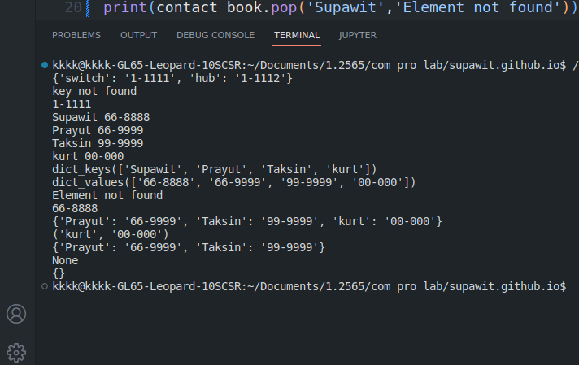
SET
Set is an unordered collection of data items that are unique.Python Set doesn’t maintain the order of elements, i.e., It is an unordered data set. So you cannot access elements by their index or perform insert operation using an index number.
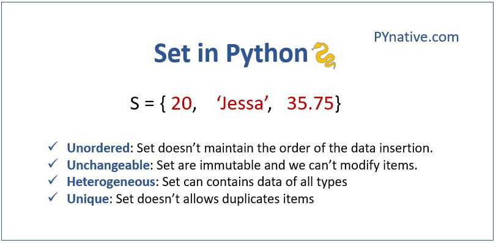
CREATING A SET
We can create a set by using the set() function with an iterable object or a sequence by placing the sequence inside curly braces, separated by ‘comma’.
Example
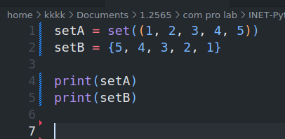

You will get error if you try to access items using index like set[0] because set is unordered collection of items.
see the example


Union of set
Union of two sets will return all the items present in both sets (all items will be present only once). This can be done with either the | operator or the union() method. The following image shows the union operation of two sets A and B.
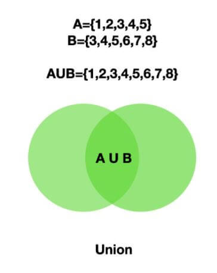
Intersection of set
The intersection of two sets will return only the common elements in both sets. The intersection can be done using the & operator and intersection() method.
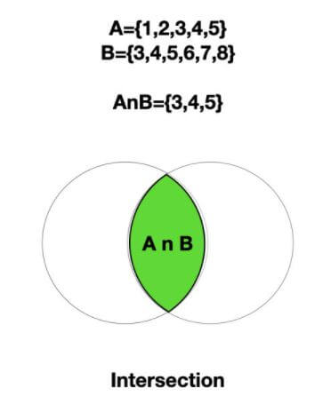
Difference of set
The difference operation will return the items that are present only in the first set i.e the set on which the method is called. This can be done with the help of the - operator or the difference() method.
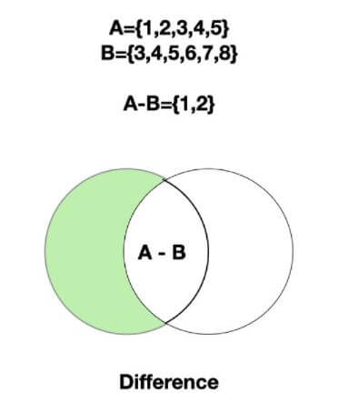
Symmetric Difference of set
The Symmetric difference operation returns the elements that are unique in both sets. This is the opposite of the intersection. This is performed using the ^ operator or by using the symmetric_difference() method.
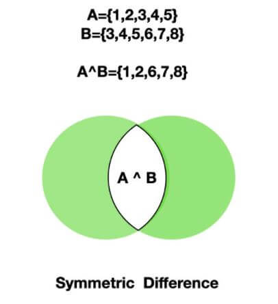
Method of set
len() |
Return the length (the number of items) in the set. |
add() |
Add an element to a set. If the element is already present, it doesn’t add any element. |
update() |
Add all elements of a list, tuple, set, or dictionary to another set. It doesn’t add any duplicate element. |
remove(),discard() |
Remove an item from a set. If the item is not present in the set, it raises an error.Discard method doesn’t raise an error if the item is not present in the set. |
clear() |
Remove all items from the set. |
union() or | |
Union of A and B is a set of all elements from both sets. If there are duplicate elements, they appear only once in the result. |
intersection or & |
Intersection of A and B is a set of elements that are common in both the sets. If there are duplicate elements, they appear only once in the result. |
difference or - |
Difference of A and B (A-B) is a set of elements that are only in A but not in B. If there are duplicate elements, they appear only once in the result. |
synmmetric_difference() or ^ |
Symmetric Difference of A and B is a set of elements in both A and B except those that are common in both. |
issubset() or <= |
Test whether every element in the set A is in the set B. |
issuperset() or >= |
Test whether every element in the set B is in the set A. |
Example
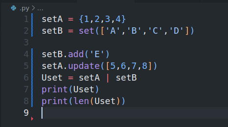
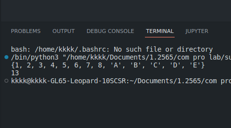
SERAILIZING OBJECT
Serializing an object means to convert its state to a byte stream so that the byte stream can be reverted back into a copy of the object. Deserializing an object means to convert the byte stream back into a copy of the object.
Pickle module implements binary protocols for serializing and de-serializing a Python object structure. “Pickling” is the process whereby a Python object hierarchy is converted into a byte stream, and “unpickling” is the inverse operation, whereby a byte stream (from a binary file or bytes-like object) is converted back into an object hierarchy.
-
Step to pickle an object
1. Import pickle module
2. Open a file, where you want to store the data
3. Put data into the file
4. Close the file
-
Step to unpickle an object
1. Import pickle module
2. Open the file for reading
3. Read the data from the file
4. Close the file
Example to Pickle
Example to Unpickle
Finish Lecture 8
Thank you

Thanks ! Goodluck
If you have any questions, please feel free to contact me.